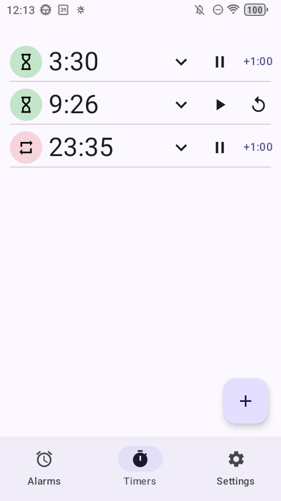

The ordinary part first
A clock app needs timers, so Risetime has them, in a tab beside its alarms. Nothing here should surprise you — that is rather the point. Tap the plus and you get a full-screen keypad rather than a dial: type the digits and they fill from the right, the way a microwave does. Four, zero, zero gives you four minutes, and six digits let you dial anything up to a hundred hours.
Timers sit in a list sorted by how long they were set for, shortest first, rather than by the order you made them. Yours is where it was yesterday, so you stop hunting for it.

Each row carries what you need while it counts: pause, and a +1:00 button that adds time to whatever is left — a minute unless you change it in Settings. Pause a timer and that button becomes a reset. The chevron opens the row for the two things you need less often — the repeat switch, and delete.
Repeat, without the drift
This is the part your phone's clock app probably does not do. Turn repeat on and the timer starts itself again every time it finishes — for the round you are on, the set you are doing, the twenty-five minutes you are giving to one chapter. Rest periods, drills, revision blocks, stretches, a reminder to look away from the screen.
The cycles are anchored to when each one was due, not to when you silenced it. Thirty minutes repeated twice is sixty minutes, not sixty-one. Otherwise every cycle would inherit the length of the last bell you ignored, and by evening the thing would need resetting.
A repeating timer rings for thirty seconds by default, then moves to the next cycle. There is no "never" option for that window — a bell with no end would stall the loop it belongs to.
One-shot timers work the other way round: they ring for ten minutes by default, and "never" is available if you want one that waits for you however long that takes.
What happens when the phone restarts
Most countdown timers are a number held in a running app: restart the phone and the number is gone. Risetime schedules each one as an exact alarm with the operating system and re-arms it at boot, so a timer with time left keeps counting from where the clock says it should be.
One whose moment passed while the phone was off is marked finished, with a notification, and without ringing — a bell at boot would be telling you the pasta is ready now when it was ready forty minutes ago.
One limit worth stating plainly: an exact alarm does not survive a force-stop — yours, or one issued by an aggressive battery manager. That is the same constraint alarms live with, and Risetime's reliability screen walks you through the settings your particular phone needs. The setup guide covers it.
The notification counts on its own
The countdown in your notification shade is drawn by Android itself rather than repainted by the app. It keeps ticking with no Risetime process alive at all: swipe the app out of recents and the number in your shade carries on.
There is one card for whatever is running or paused, and one for whatever is ringing — not one card per timer stacking up in the shade.
Swiping that card away stops nothing. It dismisses a piece of paper: the card comes straight back from live state, and a ringing timer keeps ringing. Stopping is always a deliberate button, so a stray thumb never silences something you needed.
Its own sound, its own volume
Timers do not borrow your alarm's settings, and repeating timers do not borrow the one-shot ones — sensible, given a bell you hear once an hour should rarely be the one that drags you out of sleep. Each of the two carries its own:
- Sound, chosen from your system sounds or a file of your own — Risetime ships no audio of its own
- Volume, either the system level or a level you set for timers alone
- How long it rings before giving up, and an optional gradual fade-in
Two things are shared rather than doubled: whether timers vibrate, and what the hardware volume keys do while a finished timer's full-screen alert is on your display — change the volume, add time, stop it, or nothing at all.
Setting one up
Open the Timers tab, tap the plus, type the duration, press play. That is the whole thing — there is nothing to name and nothing to file.
To make it repeat, open the row with the chevron and tick Repeat. One thing to know before you rely on it: the repeat setting is read once per cycle, at the moment the bell starts. Untick it while a timer is ringing and you get one more cycle before it stops.
The free version holds three timers, the same count as its alarms. Reach it and the add button is simply absent — no dialog, no padlock, no banner naming what you are missing. If a contribution lapses nothing is deleted: every timer you made keeps working, you just cannot add another. The setup guide covers the alarms, which share the same reliability settings.